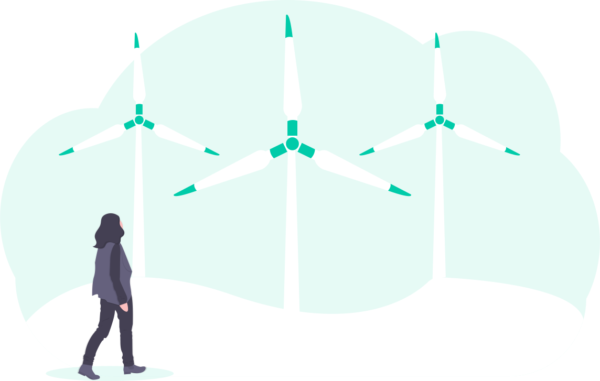
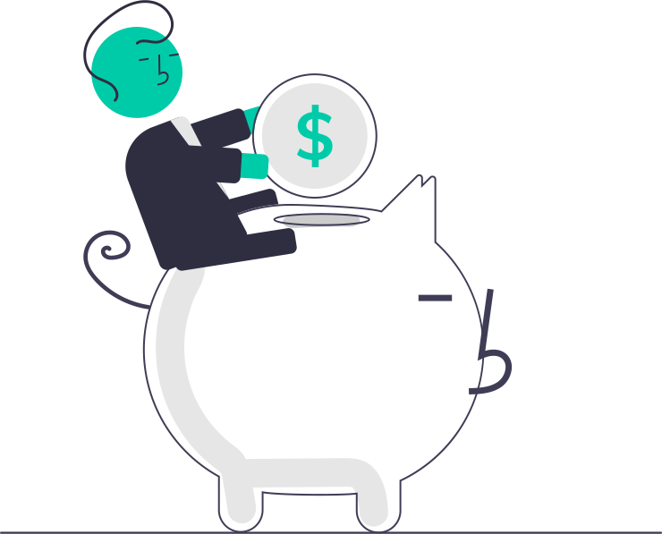
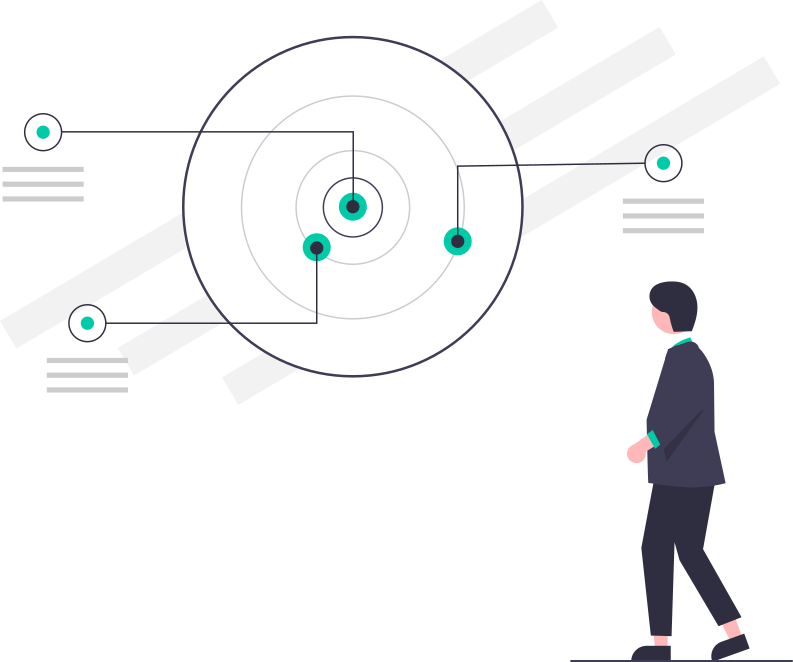

Tailored financial advice
Koen Bouche, financial advisor & manager
About Tellus
Tellus Consultancy B.V. is a sole proprietorship specialising in financial services. What is financial advice? For an asset manager the definition is completely different from that of an accountant. For me it is advising, stimulating and challenging, with the aim of making the company, or the project, stronger. So my strength lies mainly in my financial background and general knowledge. I am not a techie or a specialist (unless it is credit finance), but I do help companies optimize their financial planning, in the short and long term.
This includes:
- Clarify and quantify strategies
- Helping to map cash flows (discounted cash flow modelling)
- Advising on optimal financing structure
- If desired, functioning as an intermediary towards third parties
- Tellus (Latin for "earth") is an Old Roman patron goddess of the earth. I want to help making the planet greener and sustainable. Whether it concerns techniques (solar panels, wind turbines, batteries, ...) or sustainable strategies. I just want to help make it happen. There is only one globe and space travel is not for me...
- Tell us! If you have a problem and you think I can help, contact me! Let's share knowledge! Dynamic discussion (and learning) is always fun and gives energy when it happens openly and with mutual respect.
My Specialisations
Green energy
Sun & wind, battery, heat exchangers... I love it! But from the financial side (profit/loss, payback periods, ...). I can talk about yields, inverters and energy curves, but don't ask me to cover the technical side. My side is to make sure that an investment decision can be made.
Financing techniques and banking services
After 20 years of working in a bank and also being active as an investment manager on the other side, I was involved in the creation and realisation of a lot of financing transactions. The most important thing remains customisation, tailored towards the needs of the company: What is the goal and how do we achieve it? I am also happy to help you with questions about other matters (KYC, hedging, payment structures).
Retail: food & non-food

Maybe this might look like a bizarre match, but I had a lot of retail customers when active as a corporate banker. That wonderful, dynamic but also dangerously saturated world has always fascinated me! Here, I see my role more as a challenger and sounding board around testing strategies, without specific product knowledge.
Project financing and securitisation
SPV, non-recourse, DSCR, DSRF, junior-senior-tranching,... Yep, my cup of tea! But always in the bigger story: the means must serve the end goal!
What do I stand for?
After 20 years at KBC Bank, I wanted to focus even more on what I love doing best: giving advice and helping to make things happen! This both vocally (I just like to give my opinion) numbers (yes, I am one of those Excel nerds who like to put things into a spreadsheet or, even worse, make a powerpoint of it), as well as follow up actions! My past as a corporate banker gave me the opportunity to get to know many types of businesses, from project financing to multinationals, often in the different phases of their of their existence. Each of these companies and phases has specific needs, whereby customisation and empathy are particularly important.
- Starting companies often need to test and refine ideas, moving from an idea to a fundable and feasible plan. Here, we focus mainly on quantifying and calculating operating costs and investments, in order to lay a solid foundation for further growth. This is both to protect its own invested capital and to provide opportunities to attract external funding.
- I always thought it was great assisting young entrepreneurs and helping them launch projects, especially because the first investments are the hardest!
- Growth companies with their dynamic environment and inexhaustible optimism sometimes also experience growing pains,
whereby it is important not to put the elephant in your mouth all at once, but to eat it bite by bite.
With these type of companies, it is important to help determine priorities, including whether short-term hyper-growth is sustainable in the long term. This is both for the shareholders (increase or dilute?) as well as the external financing parties (can they or do they want to follow?). Both towards risks taken (every risk has its price, but is the price justified?) and the new opportunities at hand.
- Mature companies do they exist? In theory, yes, but every company knows better than to take it easy! If not, the decline has probably already begun. It is therefore a question of building on and protecting what is good and making plans to embark on a new growth plan. This can be done organically through own development (within or outside the company), or by skipping the start-up phase through an acquisition. Especially when it comes to reinventing themselves, companies need support, for sure when it comes to takeovers. The bride of course dresses as beautifully as possible, her parents (bankers, consultants) will especially highlight the good qualities (several layers even!), but it comes down to determining the right dowry. You don't want to deal with the winner's curse! And this is where an independent advisor can help you a lot!
- For me, it was always fun to challenge these kinds of companies and help strengthen their plans! Sometimes that means building in safeguards and pointing out unforeseen risks. But always focused on the end goal and grafted onto the identity of the company.
Frequently Asked Questions
- We need to have a connection and trust each other
- I must feel that I can contribute added value. That is important for you as well as for me!
- The agenda must also be aligned
- There must be no conflicting interests with other assignments.
- I live in the area of Gent ,
but can handle assignments all over Belgium
 , and by extension Europe
, and by extension Europe  .
. - I am easily accessible digitally, which does not mean that I do not consider personal contact very important. Especially for assignments where strategies need to be assessed and worked out interactively.
- In a cooperation, it is important to find a good balance. Of course, the idea is to work as efficiently as possible and avoid unnecessary travel.
Contact
If there is anything else you need to know, please do not hesitate to contact me via the form below or via my Email address!